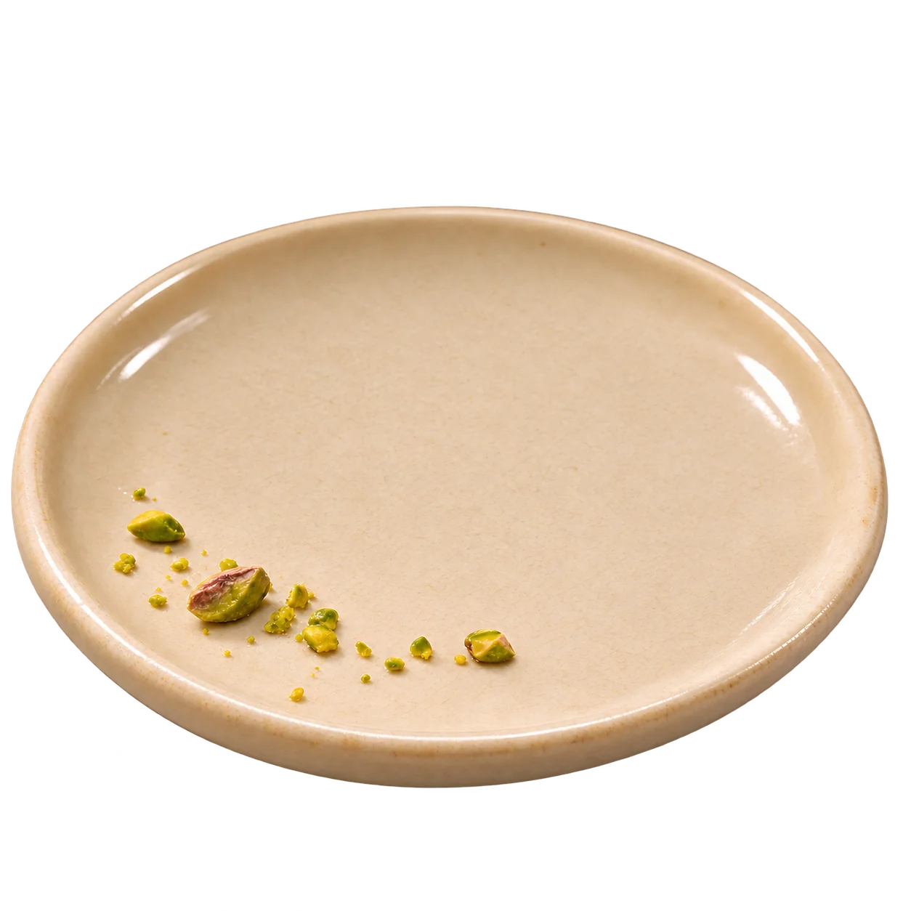
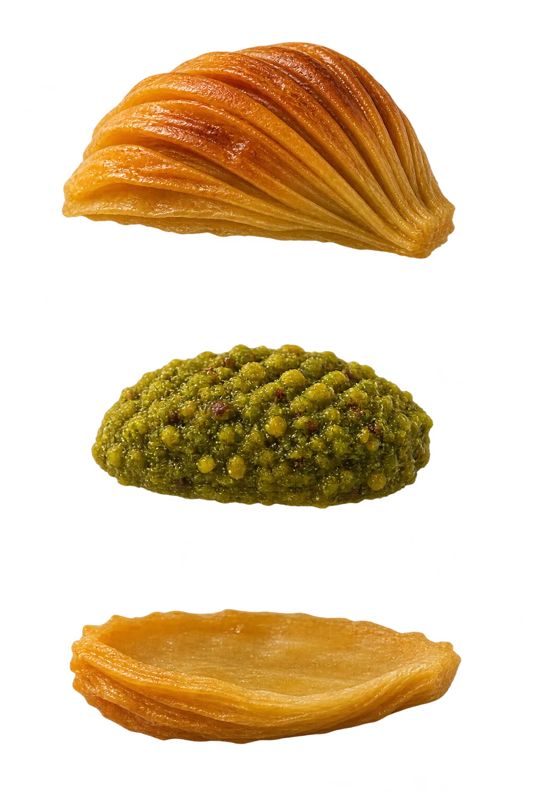
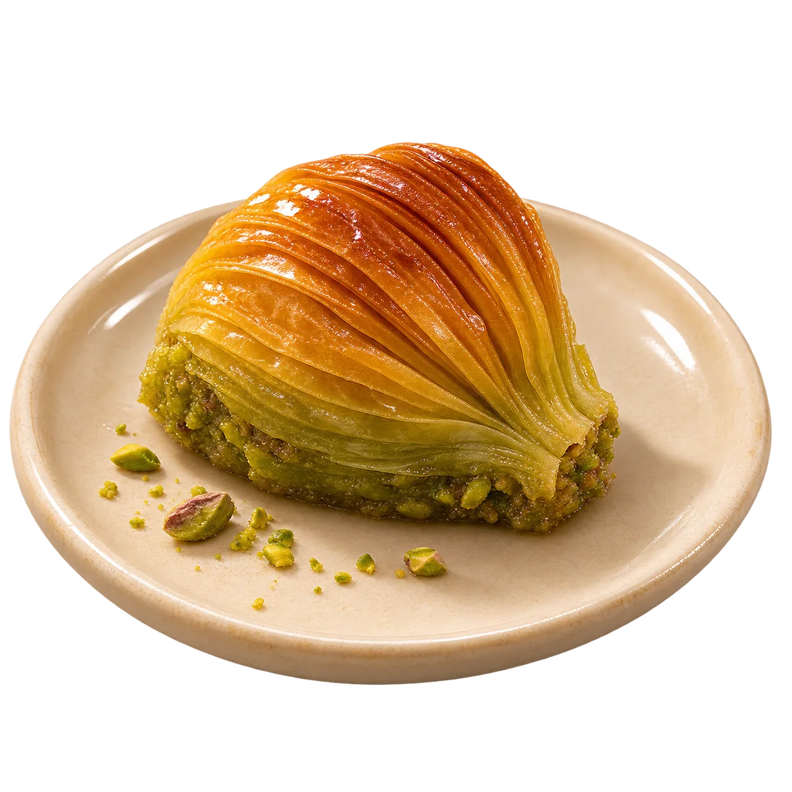
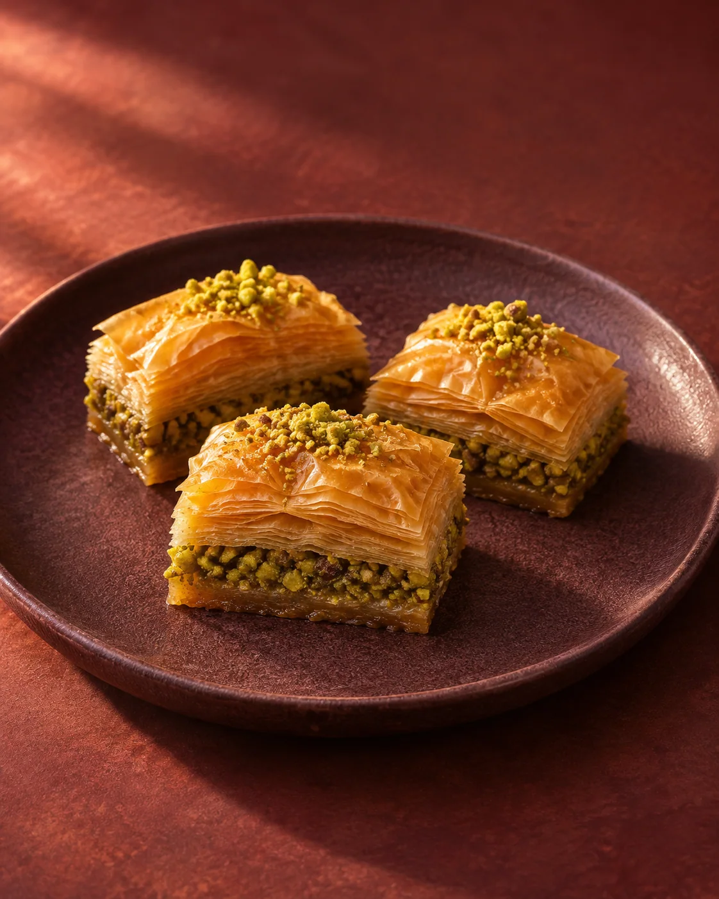
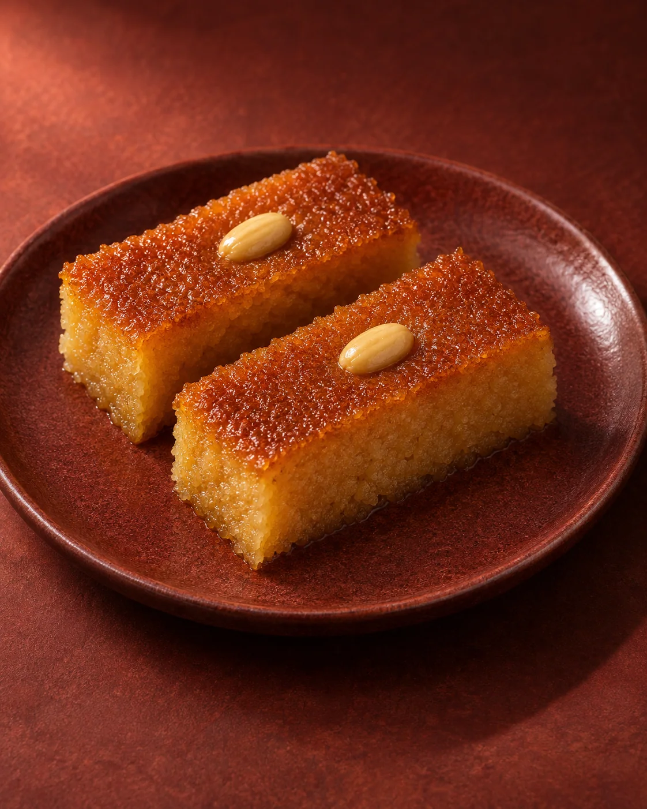
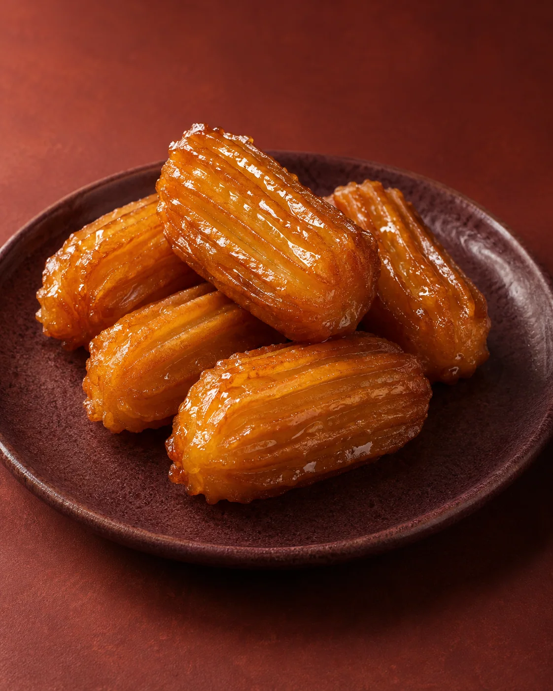
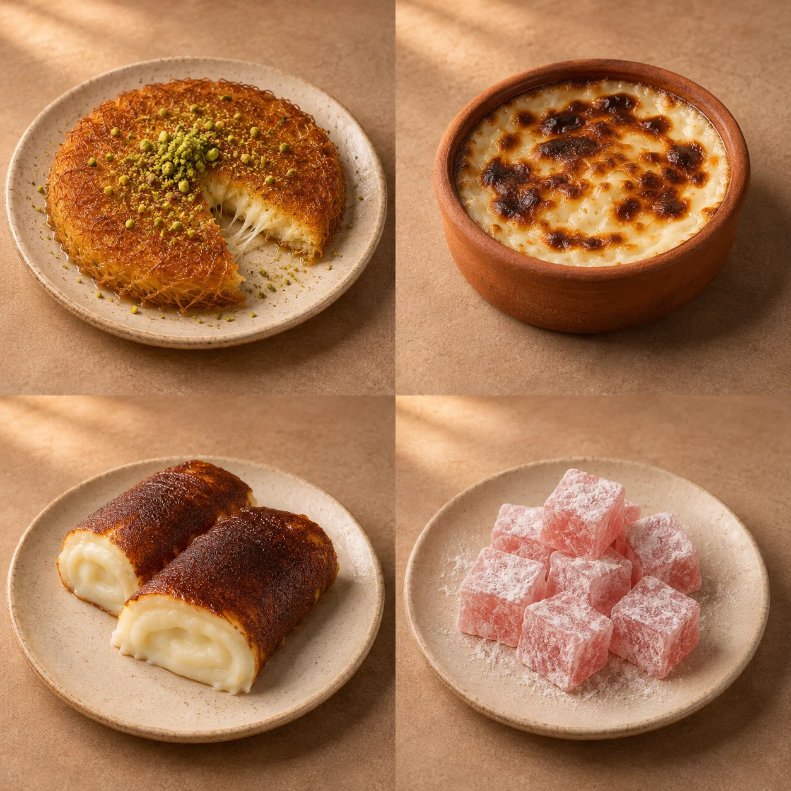
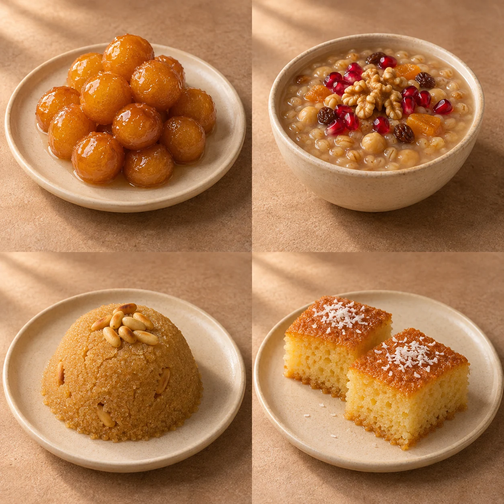
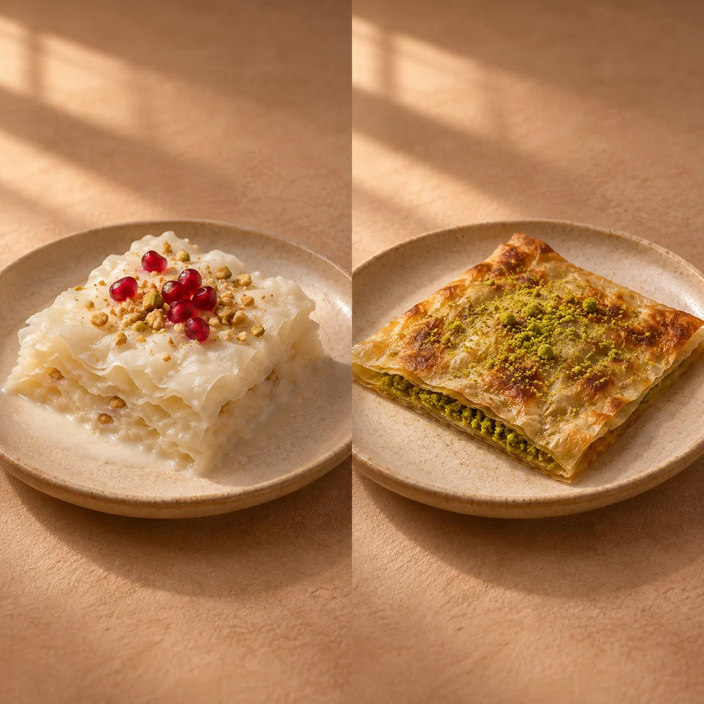
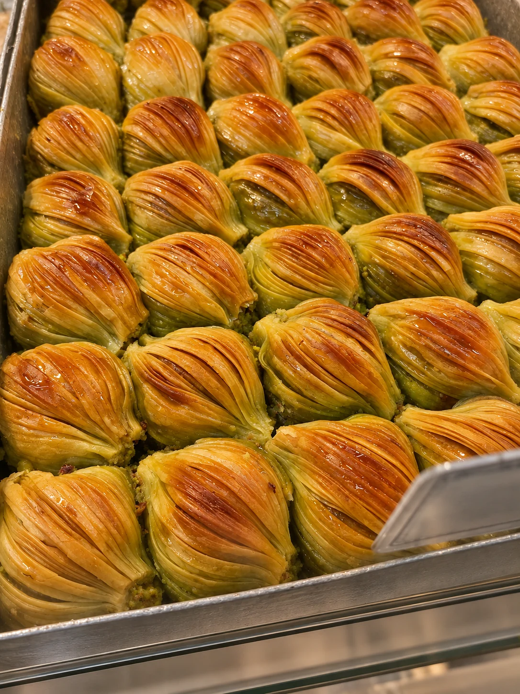

Fıstıklı baklava
Kıvrımlı çıtır yufka, bol fıstıklı iç.
Tatlıcı Kılıçoğlu · Şişli



İncecik katlar, fıstık ve şerbet.
İzzet Paşa’da bir tatlı molası.
Tatlıcı Kılıçoğlu
İnce yufkadan şerbetli irmiğe, vitrinden hangi tatlıyı seçeceksiniz?
Kıvrımlı çıtır yufka, bol fıstıklı iç.

İnce katları ve çıtır dokusuyla bir klasik.

Yoğun irmik dokusu, kızarmış bir üst kat.

Dışı çıtır, içi şerbetli. Küçük lokmalıklar.
Görseller temsilidir. Güncel çeşitler için dükkânı arayabilirsiniz.
Tatlı rehberi
Türkiye’nin klasik tatlılarından bir seçki. Dükkânda bulunan çeşitleri vitrinde görebilirsiniz.

Çıtır tel kadayıf, eriyen peynir ve şerbet.
Üstü kızarmış, kremsi pirinç tatlısı.
Karamelize yüzeyiyle yumuşak sütlü tatlı.
Gül, fıstık ve başka aromalarla hazırlanan yumuşak küpler.

Kızartılıp şerbete batırılan küçük hamur topları.
Buğday, kuru meyve ve bakliyatla hazırlanan tatlı.
Kavrulmuş irmiğin tereyağlı, taneli tatlısı.
Şerbetle ıslatılan sünger dokulu irmik keki.

Sütle yumuşatılan ince yapraklar, ceviz ve nar.
İnce, çıtır hamurla hazırlanan fıstıklı Gaziantep klasiği.
Görseller temsilidir. GoTürkiye tatlı rehberi

İzzet Paşa, Şişli
Yeni Yol Caddesi’ne yolunuz düştüğünde vitrine bir göz atın. Burada bir dilimle mola verebilir, eve ya da misafirliğe götürmek için bir kutu seçebilirsiniz.
Dükkânı bulunŞişli, İstanbul
Saatleri ve günün tatlılarını telefonla teyit edebilirsiniz.